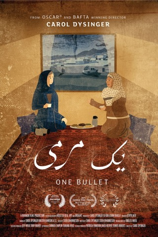

About the film
Inside the secret CIA drone war. Intimate stories from the war on terror. People living under drones in Pakistan and drone pilots struggling with killing through joysticks in the U.S.
The film covers diverse and integral ground, from the recruitment of young pilots at gaming conventions and the re-definition of “going to war,” to the moral stance of engineers behind the technology, to world leaders giving the secret “green light” to engage in the biggest targeted killing program in history, to the people willing to stand up for civil liberties and accountability.
This is just the beginning. In the midst of fast advancement of technology and lagging international legislation, the film shows how drones change wars--and possibly our future.
At the festival
- 2015 Friday, October 2, 2015 · 6:00 PM · National Portrait GalleryPost screening panel discussion with Tom Blanton, Sabrina Buchwalter, Mark Mazzetti, Scott Shane and Daniel Zwerdling.
More films on these topics
 The Lost Souls of SyriaStéphane Malterre2023 · 99 min
The Lost Souls of SyriaStéphane Malterre2023 · 99 min Killing AnnaSam Benstead2026 · 76 min
Killing AnnaSam Benstead2026 · 76 min Rehearsals for a RevolutionPegah Ahangarani2026 · 95 min
Rehearsals for a RevolutionPegah Ahangarani2026 · 95 min The Secret Reading Club of KabulShakiba Adil, Elina Hirvonen2026 · 95 min
The Secret Reading Club of KabulShakiba Adil, Elina Hirvonen2026 · 95 min Cover-UpLaura Poitras, Mark Obenhaus2025 · 117 min
Cover-UpLaura Poitras, Mark Obenhaus2025 · 117 min
One BulletCarol Dysinger2023 · 90 min